Gridline F1 – Screenshots
These screenshots were made by running the firmware's real UI code against a display simulator on the PC (scaled 2×), with real API responses from the 2023 season and a simulated 2023 clock. This is not a photo of the physical board – colors on the real screen may differ slightly.
Portrait (240×320)
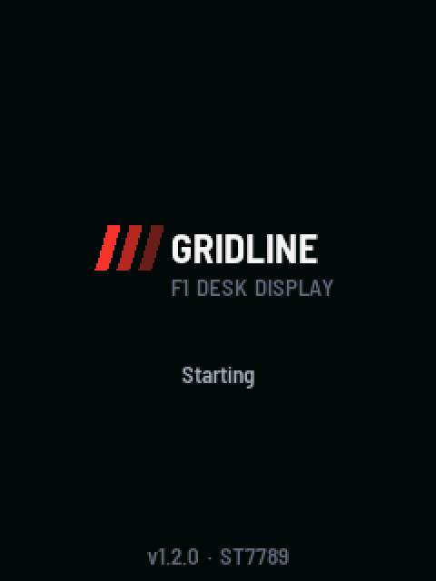
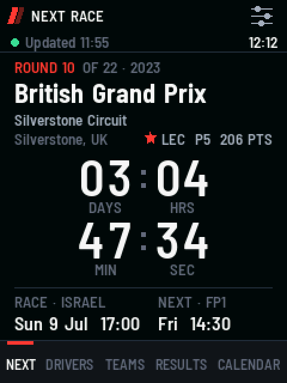
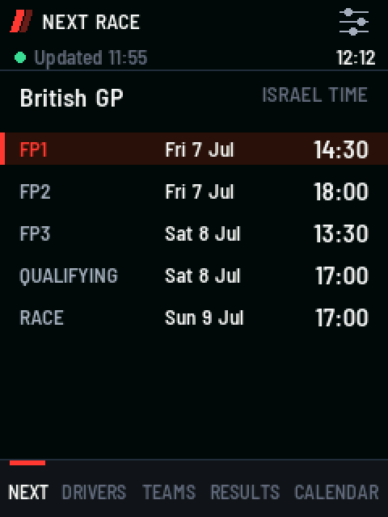


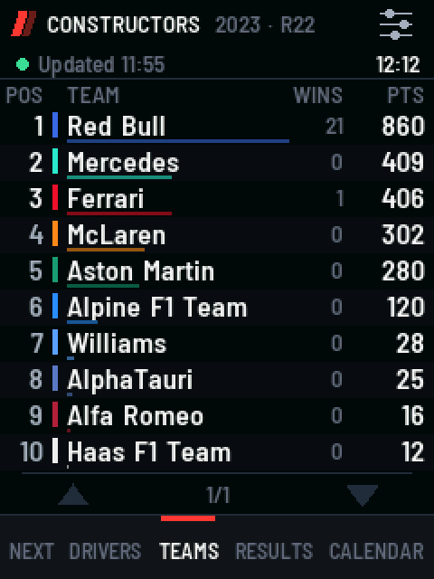


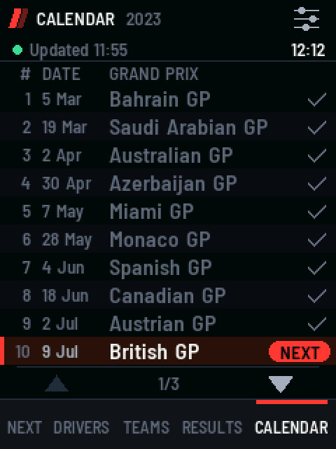


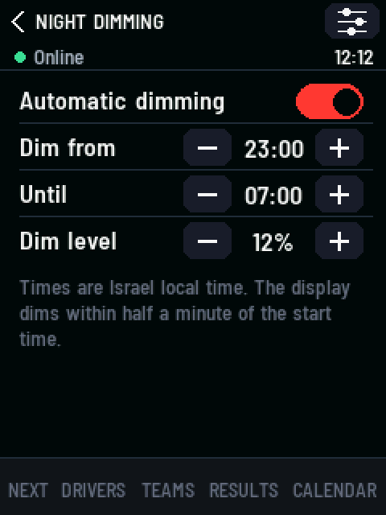

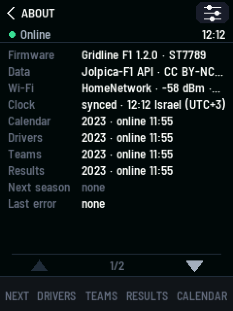


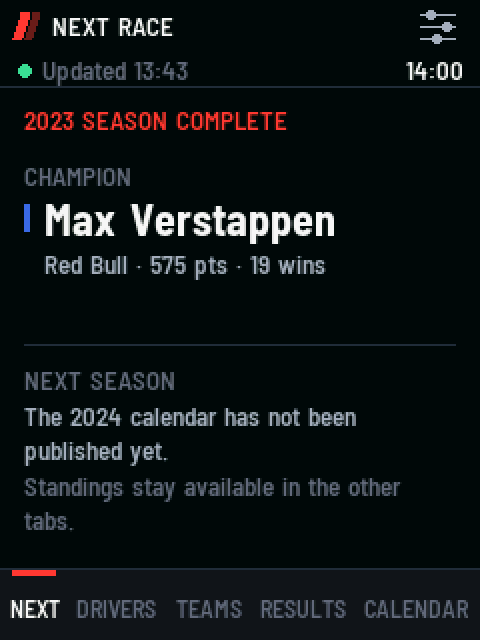
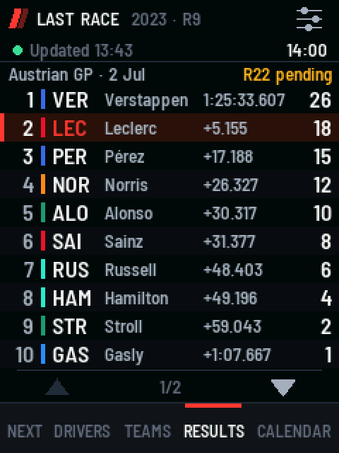


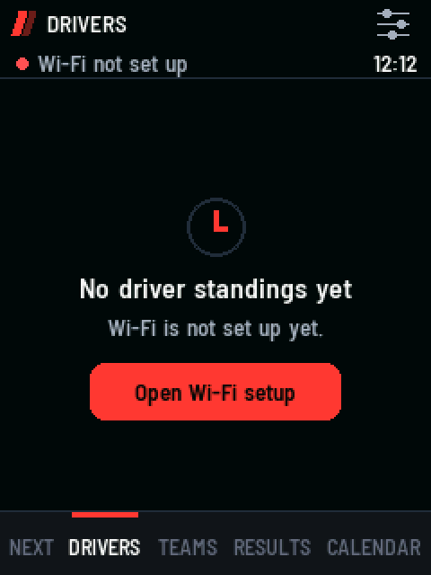

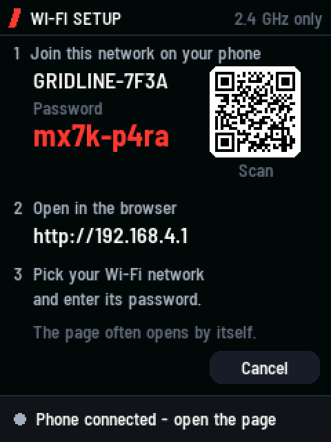
Landscape (320×240)
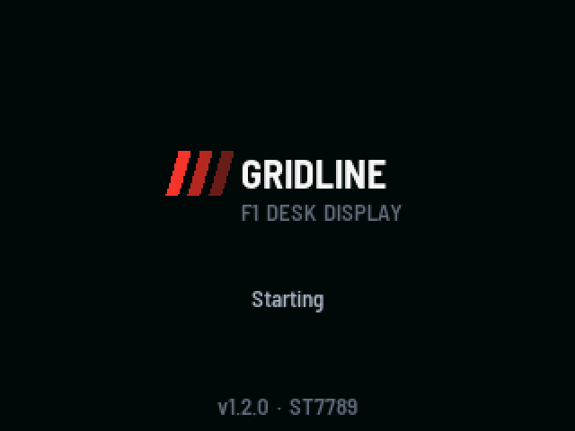


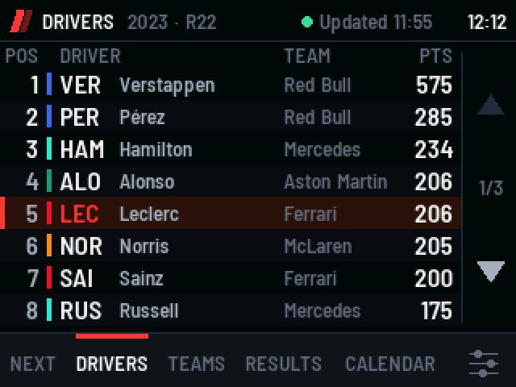


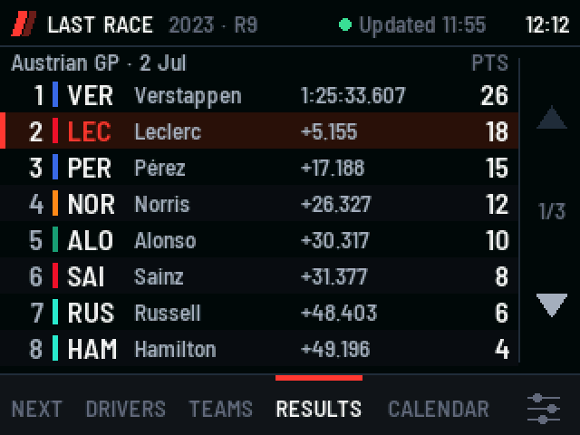


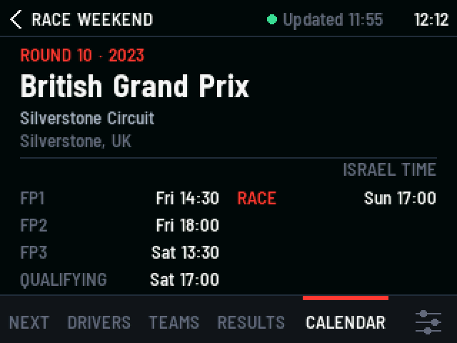

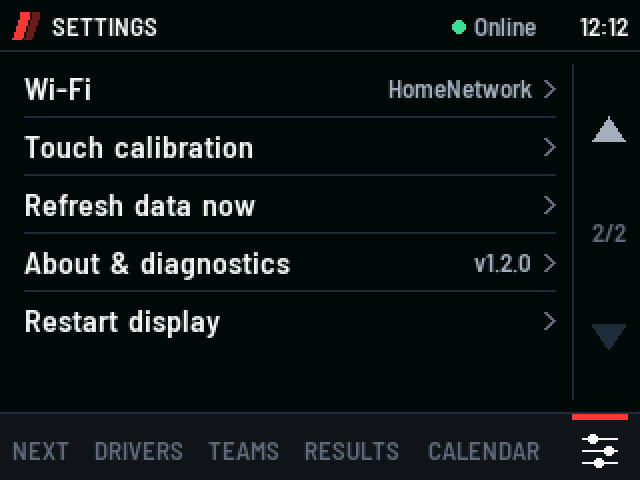
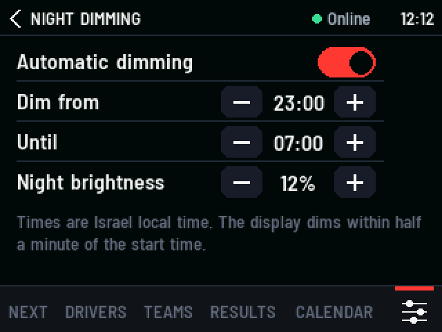
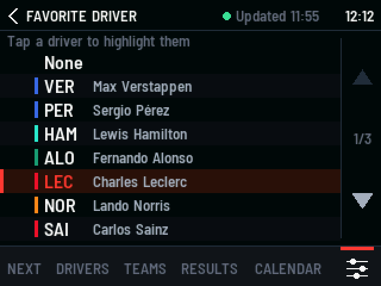
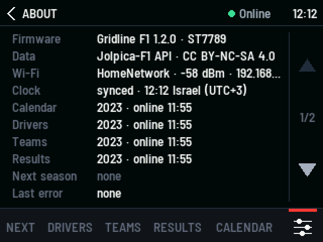

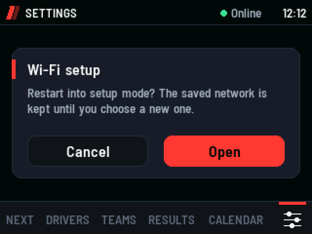
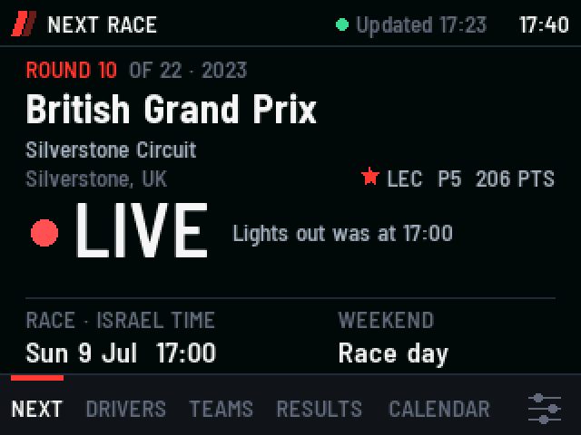
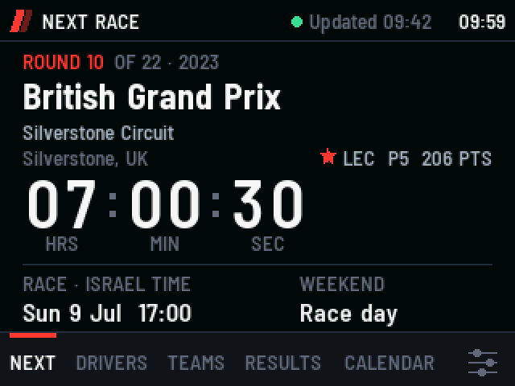

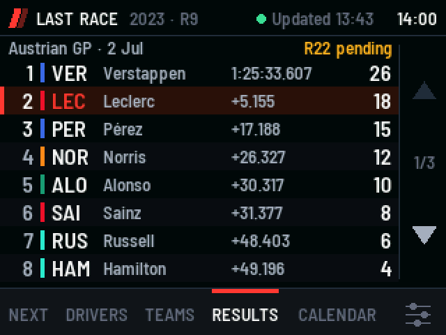

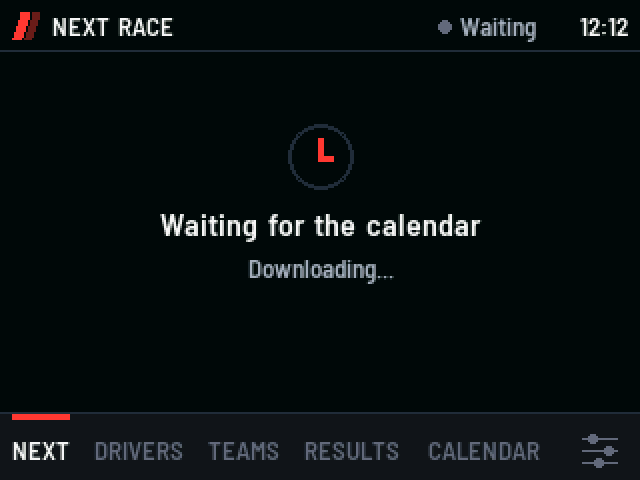
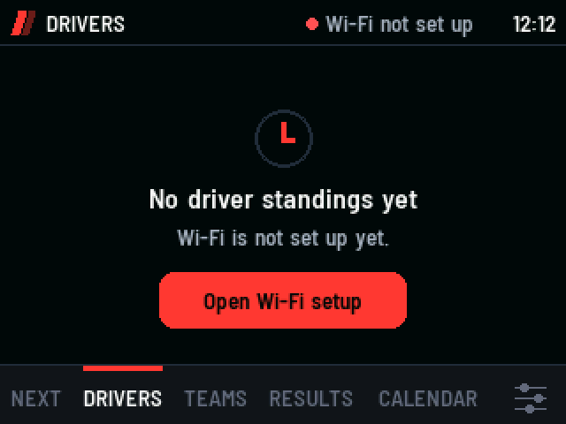
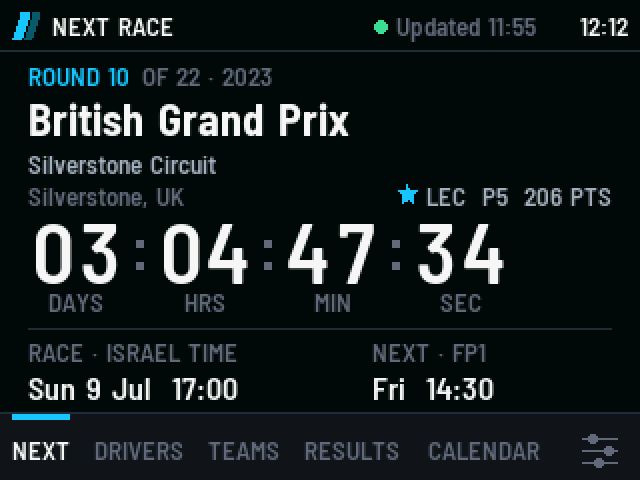